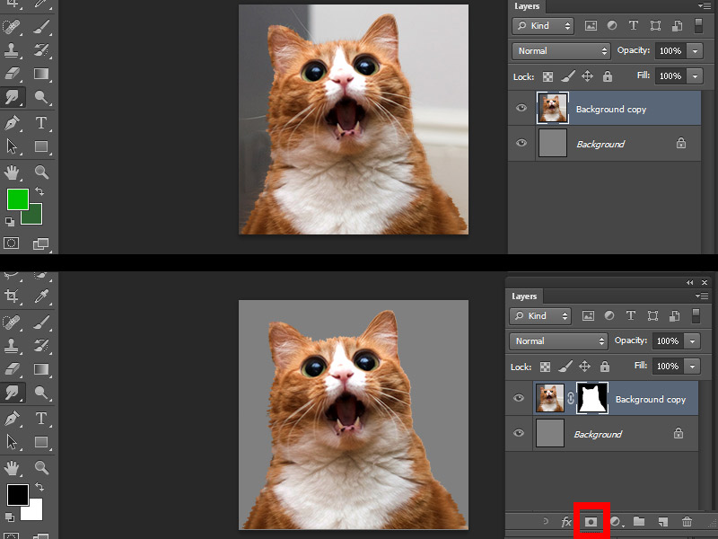
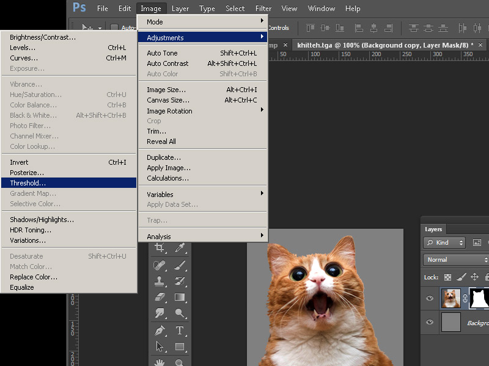
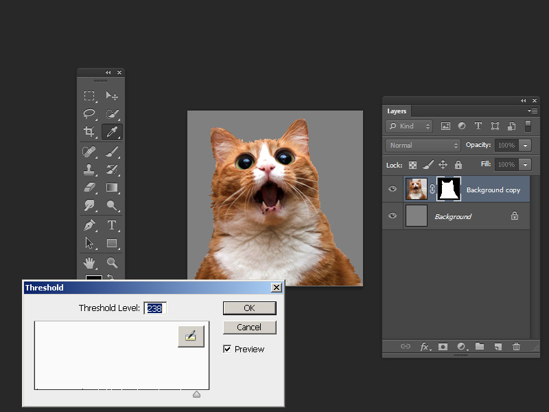
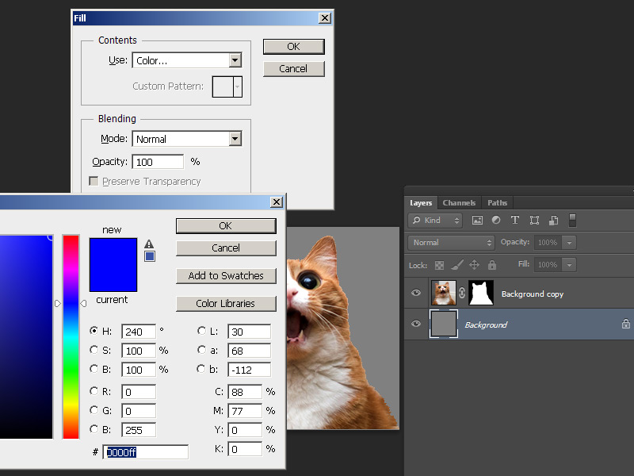
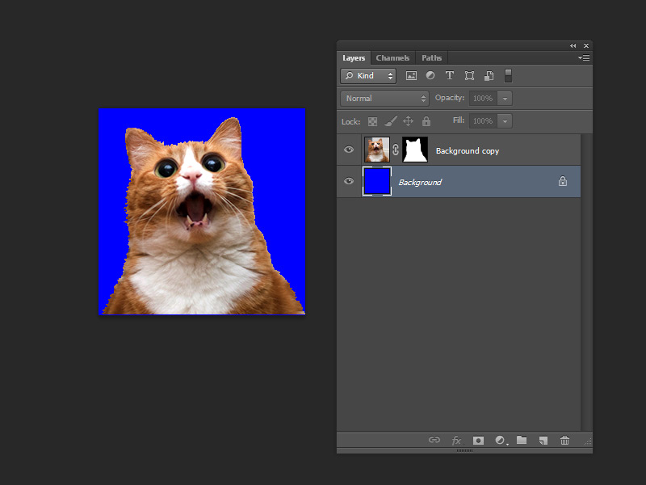
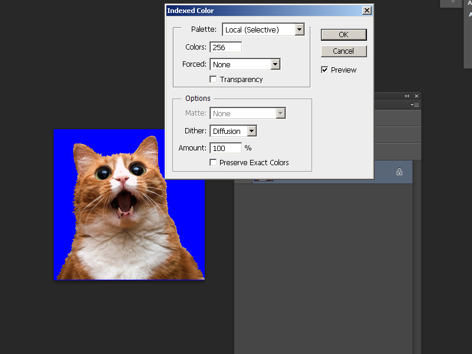
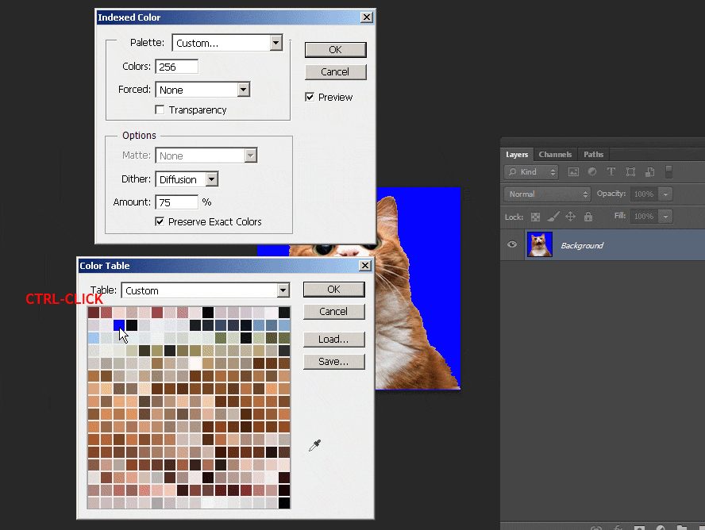
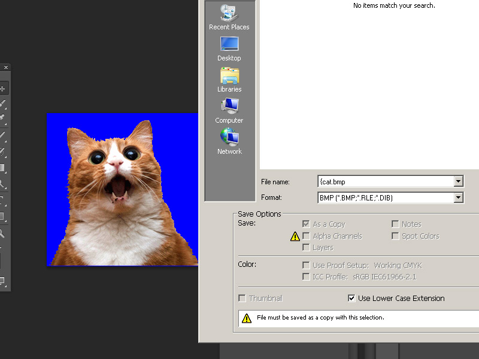

GoldSrc Map Texture Tutorial
PART 2: Masked Transparent textures
Transparent masked textures are a lot trickier because they have to have a solid color that is the last color of the indexed palette. Keep in mind that transparent textures are alphatest so there is no gradient transparency.
NOTE: If you are needing to convert many transparent textures, I suggest you take a look at Part 10: Batch Conversion
1) Create your texture as normal and then create a 50% grey fill (Bring up the fill window with shift-F5) layer underneath your image. Create a selection to crop out your subject either by lasso, pen tool or quickmask. Save this selection as a clipping mask by clicking the icon on the bottom of your layers window.

2)select your clipping mask and go to Image > adjustments > threshold. You will now have a slider bar that you will adjust to set the hard threshold of your mask, this ensures you dont have any blending or aliasing which is bad for alphatest masked transparency. The grey layer will help you check the edge.


3) Using shift-F5 bring up the fill menu and fill in your background layer with pure blue [HEX:0000ff / RGB: 0 0 255].

4) Your image is now ready for 8bit conversion.
However, if you do not want to fine tune color dithering or palette selection you can flatten the image and save as BMP format 24bit with a "{" symbol at the front of the filename (this tells the engine to recognize it as transparency for example: "{cat.bmp" ). Then import your BMP into wally and let it auto-convert the colors for you. If you are doing this skip to step 8.

5)Go to mode > index. Select any of the local palette as mentioned in part1 then set the colors to 256. Go to the palette rollout and then switch local to "custom" palette and select the pure blue color, press ctrl-click to remove it and re-add it to the final index slot and the bottom right.


7)Save the image as a BMP but with a "{" symbol at the front of the filename (this tells the engine to recognize it as transparency).

8) Create your Wad package just like you did in Part1. Then open up hammer and create a func_wall entity with "null" tool texture (as part of zhlt), then texture one side with your custom texture.

9) Set the render mode to "Solid" and then the "FX Amount" to "255". Compile and observe.


10) If you want something you can shoot through (such as a chain-link fence) create the brush entity as "func_illusionary"" instead of "func_wall"